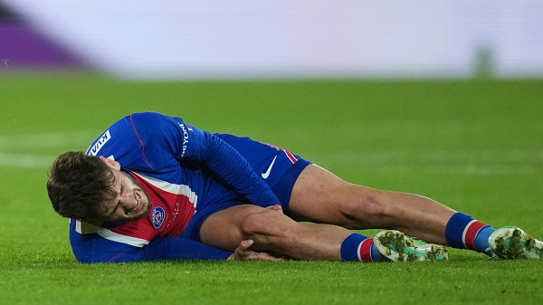

Khvicha Kvaratskhelia, the Georgian football star who plays for Paris Saint-Germain (PSG), suffered a serious injury during a Champions League match against Barcelona on 20 October 2026. The injury happened during PSG's 4-2 victory. He injured his right knee after a challenge during the game. Unfortunately, doctors confirmed that he had torn his anterior cruciate ligament (ACL). This is a very serious injury for any football player. He had to leave the pitch in the 59th minute because he could not continue playing. The news was very disappointing for him, his teammates and his fans. On 27 October, Kvaratskhelia successfully underwent surgery in Doha, Qatar. After the operation, he began preparing for a long rehabilitation process. He is expected to miss the rest of the 2026/27 season. His recovery could take several months because ACL injuries need a lot of time to heal. This injury is also a big problem for PSG because he is one of their most important attacking players. Kvaratskhelia has promised to work hard and return even stronger. His fans are supporting him and wishing him a quick recovery. Hopefully, he will return to football healthy and continue showing his amazing talent.